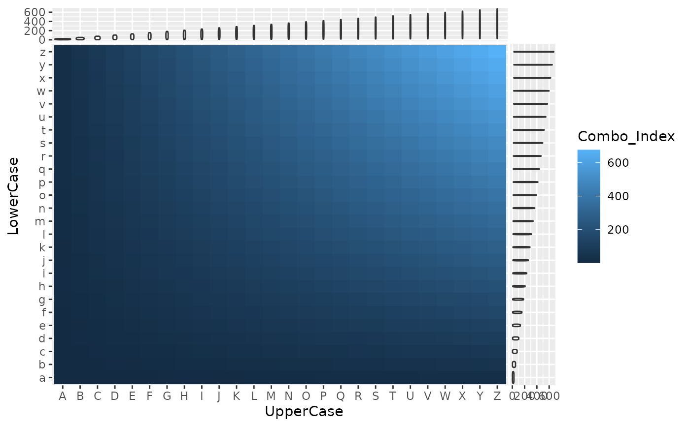
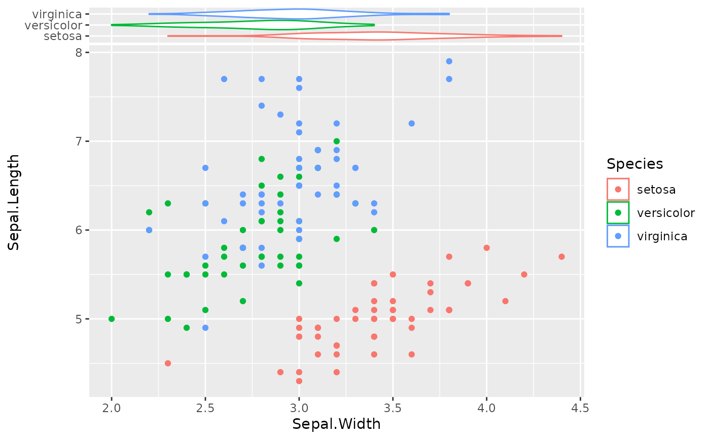
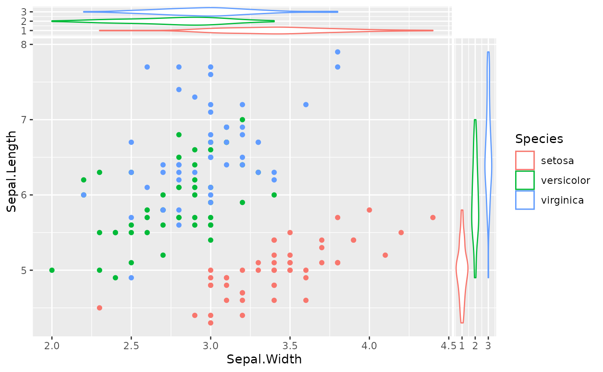

The xside and yside variants of geom_violin
Usage
geom_xsideviolin(
mapping = NULL,
data = NULL,
stat = "ydensity",
position = "dodge",
...,
trim = TRUE,
bounds = c(-Inf, Inf),
quantile.colour = NULL,
quantile.color = NULL,
quantile.linetype = 0L,
quantile.linewidth = NULL,
scale = "area",
na.rm = FALSE,
orientation = "x",
show.legend = NA,
inherit.aes = TRUE,
draw_quantiles = lifecycle::deprecated()
)
geom_ysideviolin(
mapping = NULL,
data = NULL,
stat = "ydensity",
position = "dodge",
...,
trim = TRUE,
bounds = c(-Inf, Inf),
quantile.colour = NULL,
quantile.color = NULL,
quantile.linetype = 0L,
quantile.linewidth = NULL,
scale = "area",
na.rm = FALSE,
show.legend = NA,
inherit.aes = TRUE,
orientation = "y",
draw_quantiles = lifecycle::deprecated()
)Arguments
- mapping
Set of aesthetic mappings created by
aes(). If specified andinherit.aes = TRUE(the default), it is combined with the default mapping at the top level of the plot. You must supplymappingif there is no plot mapping.- data
The data to be displayed in this layer. There are three options:
If
NULL, the default, the data is inherited from the plot data as specified in the call toggplot().A
data.frame, or other object, will override the plot data. All objects will be fortified to produce a data frame. Seefortify()for which variables will be created.A
functionwill be called with a single argument, the plot data. The return value must be adata.frame, and will be used as the layer data. Afunctioncan be created from aformula(e.g.~ head(.x, 10)).- stat
Use to override the default connection between
geom_violin()andstat_ydensity().- position
A position adjustment to use on the data for this layer. This can be used in various ways, including to prevent overplotting and improving the display. The
positionargument accepts the following:The result of calling a position function, such as
position_jitter(). This method allows for passing extra arguments to the position.A string naming the position adjustment. To give the position as a string, strip the function name of the
position_prefix. For example, to useposition_jitter(), give the position as"jitter".For more information and other ways to specify the position, see the layer position documentation.
- ...
Other arguments passed on to
layer()'sparamsargument. These arguments broadly fall into one of 4 categories below. Notably, further arguments to thepositionargument, or aesthetics that are required can not be passed through.... Unknown arguments that are not part of the 4 categories below are ignored.Static aesthetics that are not mapped to a scale, but are at a fixed value and apply to the layer as a whole. For example,
colour = "red"orlinewidth = 3. The geom's documentation has an Aesthetics section that lists the available options. The 'required' aesthetics cannot be passed on to theparams. Please note that while passing unmapped aesthetics as vectors is technically possible, the order and required length is not guaranteed to be parallel to the input data.When constructing a layer using a
stat_*()function, the...argument can be used to pass on parameters to thegeompart of the layer. An example of this isstat_density(geom = "area", outline.type = "both"). The geom's documentation lists which parameters it can accept.Inversely, when constructing a layer using a
geom_*()function, the...argument can be used to pass on parameters to thestatpart of the layer. An example of this isgeom_area(stat = "density", adjust = 0.5). The stat's documentation lists which parameters it can accept.The
key_glyphargument oflayer()may also be passed on through.... This can be one of the functions described as key glyphs, to change the display of the layer in the legend.
- trim
If
TRUE(default), trim the tails of the violins to the range of the data. IfFALSE, don't trim the tails.- bounds
Known lower and upper bounds for estimated data. Default c(-Inf, Inf) means that there are no (finite) bounds. If any bound is finite, boundary effect of default density estimation will be corrected by reflecting tails outside bounds around their closest edge. Data points outside of bounds are removed with a warning
- quantile.colour, quantile.color, quantile.linewidth, quantile.linetype
Default aesthetics for the quantile lines. Set to
NULLto inherit from the data's aesthetics. By default, quantile lines are hidden and can be turned on by changingquantile.linetype.- scale
if "area" (default), all violins have the same area (before trimming the tails). If "count", areas are scaled proportionally to the number of observations. If "width", all violins have the same maximum width.
- na.rm
If
FALSE, the default, missing values are removed with a warning. IfTRUE, missing values are silently removed.- orientation
The orientation of the layer. The default (
NA) automatically determines the orientation from the aesthetic mapping. In the rare event that this fails it can be given explicitly by settingorientationto either"x"or"y". See the Orientation section for more detail.- show.legend
logical. Should this layer be included in the legends?
NA, the default, includes if any aesthetics are mapped.FALSEnever includes, andTRUEalways includes. It can also be a named logical vector to finely select the aesthetics to display. To include legend keys for all levels, even when no data exists, useTRUE. IfNA, all levels are shown in legend, but unobserved levels are omitted.- inherit.aes
If
FALSE, overrides the default aesthetics, rather than combining with them. This is most useful for helper functions that define both data and aesthetics and shouldn't inherit behaviour from the default plot specification, e.g.annotation_borders().- draw_quantiles
![[Deprecated]](figures/lifecycle-deprecated.svg) Previous
specification of drawing quantiles.
Previous
specification of drawing quantiles.
Examples
df <- expand.grid(UpperCase = LETTERS, LowerCase = letters)
df$Combo_Index <- as.integer(df$UpperCase) * as.integer(df$LowerCase)
p1 <- ggplot(df, aes(UpperCase, LowerCase)) +
geom_tile(aes(fill = Combo_Index))
# sideviolins
# Note - Mixing discrete and continuous axis scales
# using xsideviolins when the y aesthetic was previously
# mapped with a continuous varialbe will prevent
# any labels from being plotted. This is a feature that
# will hopefully be added to ggside in the future.
p1 + geom_xsideviolin(aes(y = Combo_Index)) +
geom_ysideviolin(aes(x = Combo_Index))

# sideviolins with swapped orientation
# Note - Discrete before Continuous
# If you are to mix Discrete and Continuous variables on
# one axis, ggplot2 prefers the discrete variable to be mapped
# BEFORE the continuous.
ggplot(iris, aes(Sepal.Width, Sepal.Length, color = Species)) +
geom_xsideviolin(aes(y = Species), orientation = "y") +
geom_point()

# Alternatively, you can recast the value as a factor and then
# a numeric
ggplot(iris, aes(Sepal.Width, Sepal.Length, color = Species)) +
geom_point() +
geom_xsideviolin(aes(y = as.numeric(Species)), orientation = "y") +
geom_ysideviolin(aes(x = as.numeric(Species)), orientation = "x")
